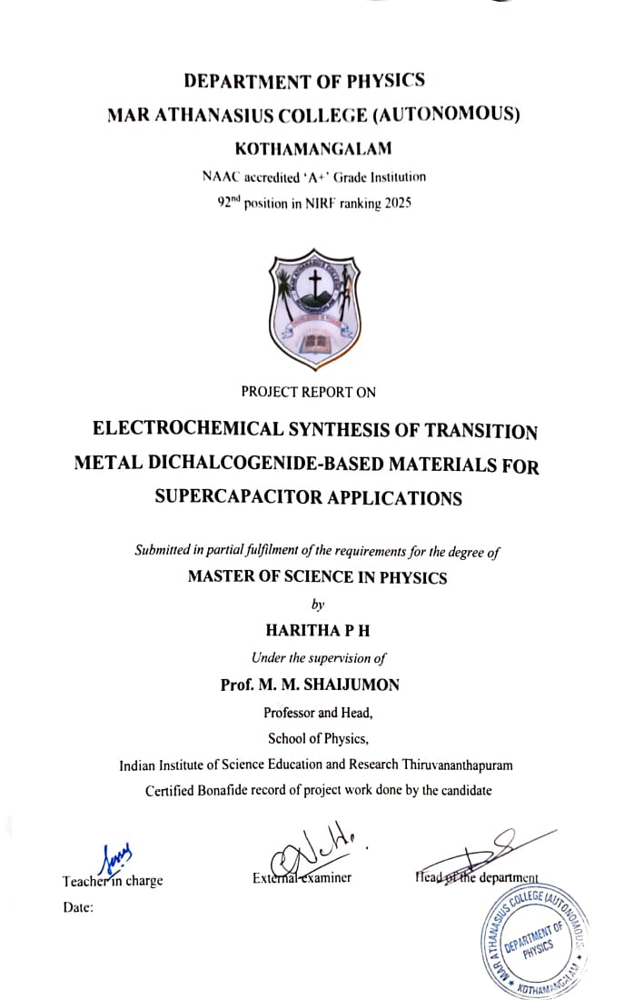

MSc RESEARCH PROJECT
Electrochemical Synthesis of Transition Metal Dichalcogenide-Based Materials for Supercapacitor Applications
Shaijumon Research Group · IISER Thiruvananthapuram
2026
THE RESEARCH
From materials to electrochemical performance.
My MSc research explored transition metal dichalcogenide-based materials for supercapacitor applications, with a focus on electrochemical synthesis, thin-film electrodes and electrochemical characterization.

↗ View thesis


This project was my first extended experience of working with functional nanomaterials and electrochemical systems. It allowed me to move from learning concepts in the classroom to working with materials, instruments and experimental data in a research environment.
INSIDE THE LABORATORY
Learning through experiments.
A glimpse into the experimental side of my MSc project — from material preparation and electrode fabrication to electrochemical measurements and data analysis.


MoS₂ · WS₂ · SnS₂ · MoSe₂
Microwave-assisted chemical exfoliation · electrochemical deposition
Binder-free thin films on carbon paper, ITO and gold foil
XRD · Raman · SEM · CV · GCD · EIS

PRESENTATION
Sharing the work.
The project also gave me an opportunity to organise and present my experimental work, bringing together the materials, methods and electrochemical results.
More than a project, this experience introduced me to the everyday process of research — preparing materials, learning from unexpected results, analysing data and gradually understanding how experimental decisions shape the final outcome.